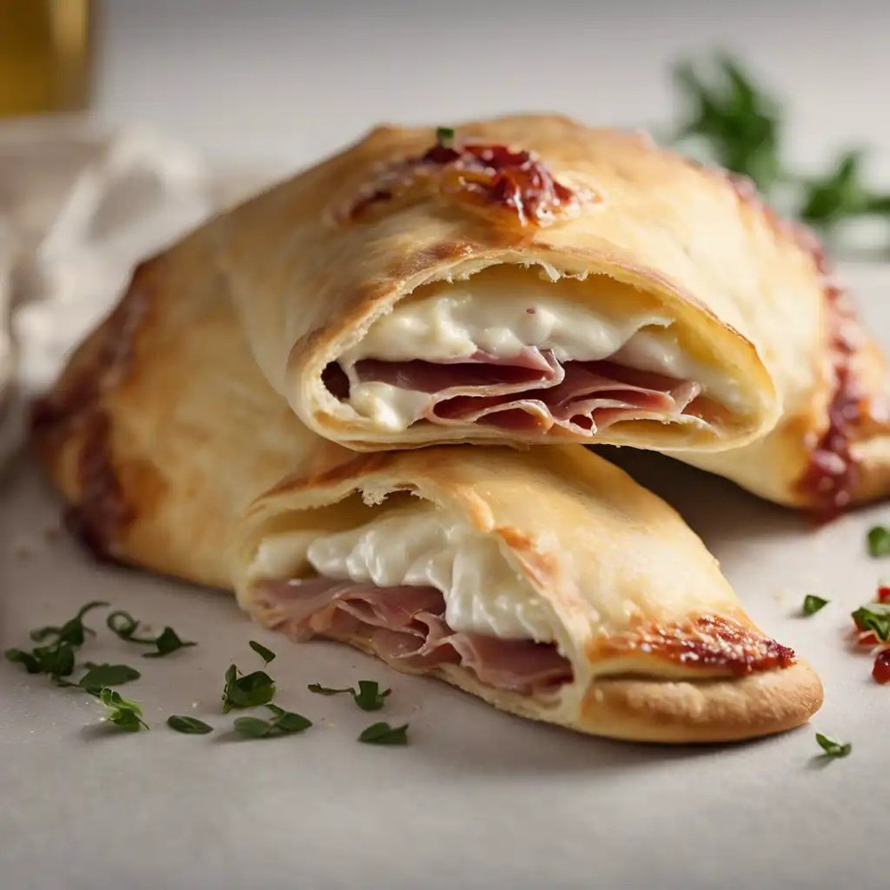

Salgados · Massas fritas/assadas
Calzone

Ingredientes
- Massa: 1 ⅓ tablete de fermento biológico fresco dissolvido em ½ xícara de água morna
- Sal a gosto
- 2 colheres (sopa) de azeite
- Cerca de 3 ½ xícaras de farinha de trigo
- Recheio: 1 ½ xícara de ricota
- 1 xícara de presunto ou salame em cubos
- 2 colheres (sopa) de parmesão
- 4 ovos
Modo de preparo
- Prepare a massa: numa tigela grande, ponha o fermento e junte mais 1 xícara de água fria. Acrescente o sal e o azeite. Junte a farinha, aos poucos, mexendo com uma colher de pau.
- Quando a massa estiver difícil de mexer, retire-a da tigela e ponha sobre uma superfície de trabalho enfarinhada. Vá amassando com as mãos, juntando a farinha de trigo aos poucos até obter uma massa uniforme e elástica. Cubra e deixe descansar em lugar protegido por 1 hora.
- Enquanto isso, prepare o recheio: numa tigela grande, misture todos os ingredientes, menos 1 ovo, até obter uma mistura nem seca nem úmida. Reserve.
- Preaqueça o forno em temperatura alta (220 °C). Trabalhe a massa sobre uma superfície enfarinhada com a base da palma das mãos por uns 15 minutos para eliminar as bolhas que surgiram durante a fermentação.
- Divida a massa em 6 partes. Abra cada parte até obter um círculo com cerca de 2 mm de espessura.
- Distribua o recheio pelos 6 círculos abertos, fazendo com que ocupe a metade de cada um.
- Dobre a metade sem recheio sobre a outra metade para formar um pastel grande. Aperte bem as bordas.
- Bata bem o ovo restante e pincele sobre os calzones. Asse no forno preaquecido até ficarem dourados. Deixe esfriar completamente e congele.
Observação
Substitua o presunto ou salame por 1 xícara de escarola cozida, picada e refogada em azeite de oliva, cebola e alho. Congelamento: embrulhe os calzones em filme plástico, ou coloque em saco plástico que feche hermeticamente; etiquete e congele. Descongelamento: na geladeira de um dia para o outro, ou no micro-ondas, ou no forno em temperatura baixa (150 °C).